안녕하세요. 권민석입니다. 한번 맡은 일은 끝까지 보고, 같은 실수를 반복하지 않기 위해 늘 기록합니다.
스타트업에서 한 서비스의 운영을 관리하고 개발하며, 사람들이 실제로 겪는 문제를 정의하고 해결하는 과정에서 꾸준히 성장해 왔습니다. 웹과 백엔드로 시작해 지금은 쿠버네티스 위에서 워크로드를 운영하고 있습니다.
자동화 파이프라인을 돌리다 메모리 과부하와 IP 차단 같은 문제를 겪으면서, 코드 바깥에서 생기는 문제에 관심을 갖게 됐습니다. AWS SAA를 취득한 뒤에도 인프라 프로젝트를 스스로 이어 가고 있습니다.
| 운영 | NKS 워크로드 3종을 Argo CD GitOps로 운영, SealedSecret 기반 시크릿 관리, NCP 콘솔(노드풀, 오브젝트 스토리지) |
|---|---|
| 클라우드 | AWS (SAA-C03 보유, Terraform으로 3-tier 구성 및 검증), NCP (파이프라인 이관, 오브젝트 스토리지) |
| 데이터 | PostgreSQL 스키마 설계, 증분 처리, 적재 전 검증 / pandas, scikit-learn (28만 건 정제와 군집, 회귀 실습) |
| 기타 | Playwright, Claude API/CLI, MCP 연동, Linux, TCP/IP, HTTP (장애 원인 분리에 활용) |
데이터를 모아 정제하고 쌓는 쪽과, 그 데이터를 꺼내 쓰는 화면 쪽을 모두 만들어 봤습니다. 그래서 어떤 구조로 저장해야 나중에 꺼내 쓰기 좋은지를 함께 생각합니다.
두 번의 장애가 모두 코드가 아니라 자원과 네트워크 정책에서 왔습니다. 그 뒤로는 문제를 만나면 애플리케이션 쪽인지 그 아래쪽인지부터 나눠 봅니다.
운영체제, 네트워크프로그래밍, 데이터통신, 데이터베이스, 알고리즘을 A+로 이수했습니다. 5학기 연속 성적 우수 장학금을 받았습니다.
문제를 푸는 것만큼 중요한 것이 다음 사람이 알아볼 수 있게 남기는 일이라고 생각합니다. 매니페스트와 문서에 판단 근거를 남기고 Slack으로 결과를 공유합니다.
VM에서 crontab으로 돌던 배치와 상주 봇을 네이버 클라우드 쿠버네티스(NKS)로 옮기고, Argo CD 기반 GitOps 배포 체계 위에서 운영한 실무 프로젝트. 컨테이너 이미지 빌드부터 배포, 시크릿 관리, 장애 대응까지 단독 수행했습니다.
회사에는 이미 NKS와 Argo CD 기반 배포 인프라가 있었지만, 제가 만든 파이프라인만 그 밖에서 VM crontab으로 돌고 있었습니다. 서버에 SSH로 들어가 스크립트를 고치는 방식이라 배포 이력이 남지 않았고, 장비에 종속돼 복구도 어려웠습니다. 기존 GitOps 체계 안으로 편입시켰습니다.
세 워크로드를 옮겼습니다. 커뮤니티 게시 배치는 CronJob, 상시 대기하는 Slack 봇은 Deployment, 창업 지원 서비스 Mallo는 웹 Deployment와 뉴스레터 CronJob으로 구성했습니다.
컨테이너화가 가장 까다로웠습니다. 파이프라인이 Python과 Node.js CLI, Playwright Chromium을 모두 요구해 단일 이미지에 담아야 했습니다. Playwright 공식 베이스 이미지를 골라 시스템 라이브러리 의존성을 베이스에서 해결했고, requirements.txt를 앱 코드보다 먼저 COPY해 코드가 바뀌어도 설치 레이어를 재사용하도록 했습니다. 개발은 Apple Silicon, 운영은 amd64라 buildx로 크로스 빌드했습니다.
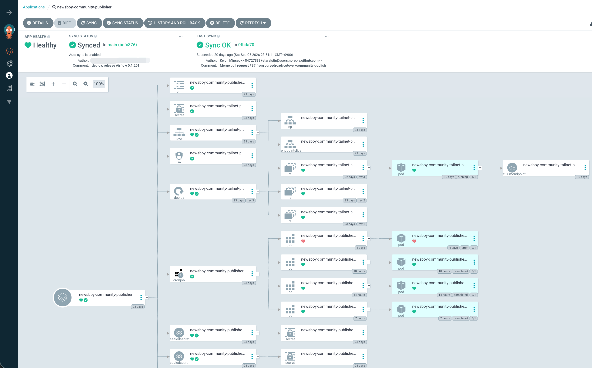
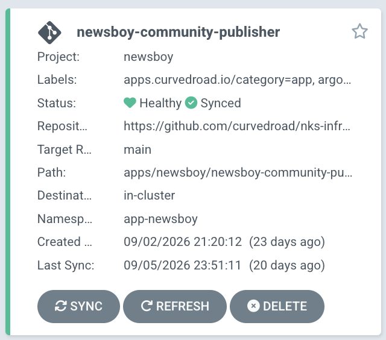
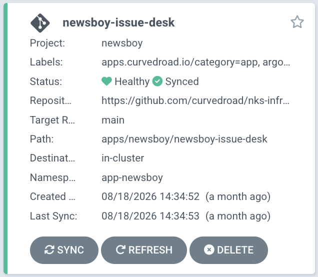
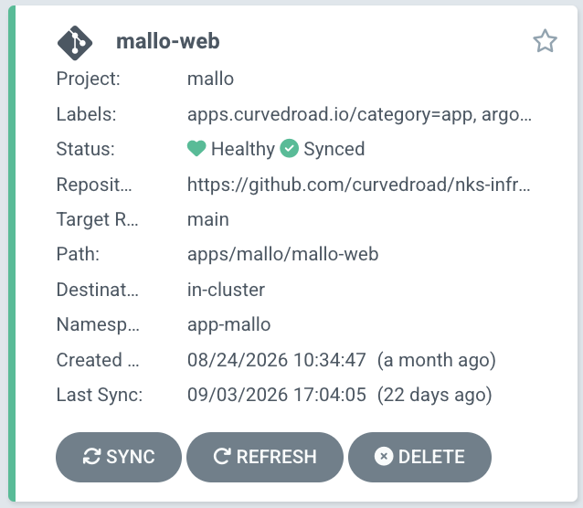
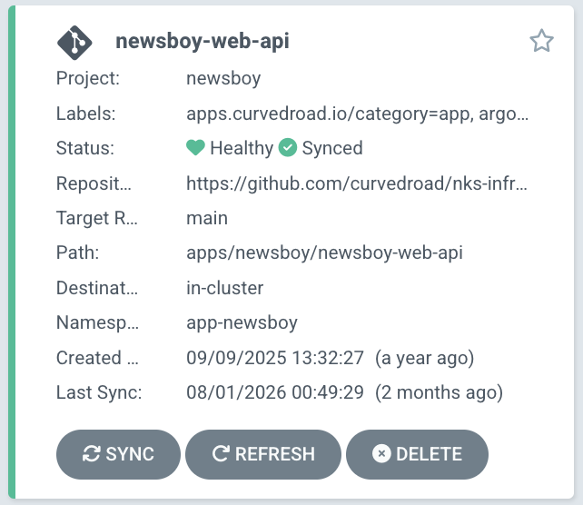
GitOps는 모든 것을 Git에 선언해야 하는데, DB 접속 정보와 토큰은 평문으로 올릴 수 없었습니다. 쿠버네티스 기본 Secret은 base64 인코딩일 뿐이라 그대로 커밋하면 유출입니다.
게다가 제 로컬 kubectl은 회사 클러스터에 접근이 막혀 있어(401), 클러스터에 붙어서 봉인할 수도 없었습니다. VM 스크립트가 손으로 처리하던 중복 실행 방지와 로그 회전, 재시작 루프도 옮길 방법이 필요했습니다.
| VM (기존) | 쿠버네티스 (이관 후) |
|---|---|
| flock 중복 실행 방지 | concurrencyPolicy: Forbid |
| crontab 스케줄 | CronJob schedule |
| 로그 파일 회전 | stdout |
| while-true 재시작 루프 | Deployment restartPolicy |
| .env 파일 | ConfigMap + SealedSecret |
매니페스트만 보고도 무엇이 언제 어떻게 도는지 알 수 있는 구조가 됐고, 배포는 PR 머지로 끝납니다. 시크릿은 봉인본만 저장소에 남습니다.
배포를 명령이 아니라 선언으로 바꾸면 추적과 자가 치유가 따라옵니다. 리소스를 고르는 일은 복사가 아니라 워크로드 성격을 판단하는 일이었습니다.
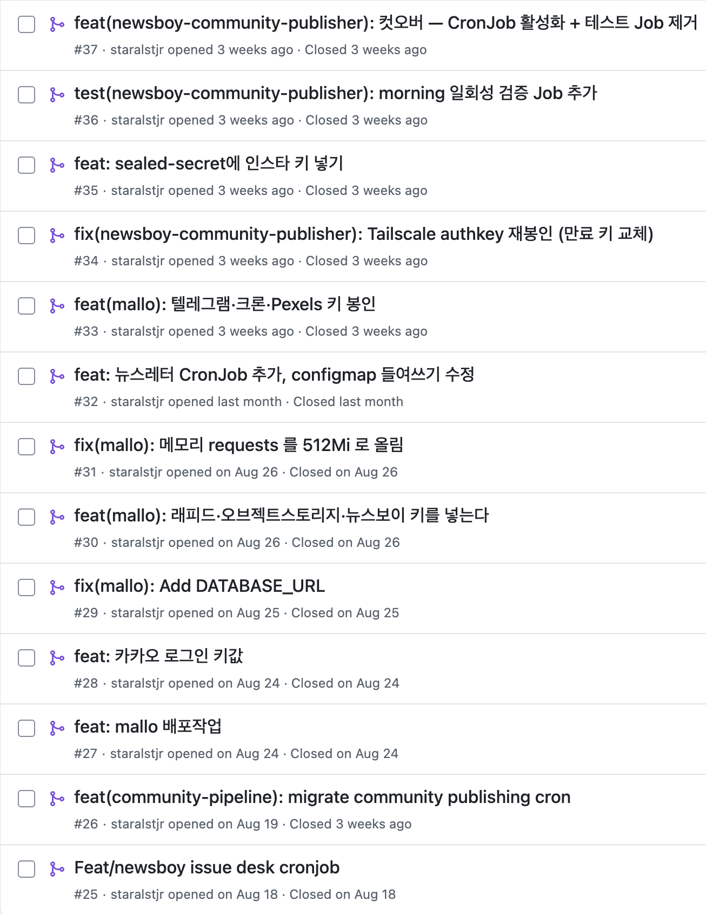
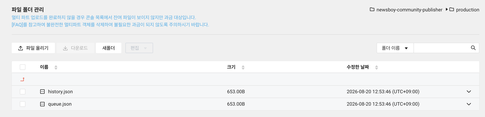
회사 배치 표준은 재시도 3회였는데, 이 워크로드는 한 번 실행에 LLM 호출 비용이 큽니다. 3회 재시도는 실패 시 비용이 세 배가 된다는 뜻이었습니다.
스케줄도 문제였습니다. CronJob의 schedule은 기본 UTC이고, timeZone 필드는 쿠버네티스 1.27 이상에서만 동작해 클러스터 버전에 의존하게 됩니다.
컷오버는 더 위험했습니다. 이 배치는 결과를 실제로 기록하기 때문에, VM과 쿠버네티스가 동시에 돌면 같은 내용이 두 번 올라갑니다.
이중 발행 없이 전환을 마쳤고, 재시도 정책과 스케줄 표기는 근거를 남긴 채 표준과 다르게 유지됩니다.
팀 표준은 지키는 것이 기본이지만, 워크로드 특성상 다르게 해야 한다면 근거를 남기고 설득하는 편이 낫습니다. 운영 중인 작업을 옮기는 일은 만드는 일과 다릅니다. 순서를 정하는 것이 절반이었습니다.
클러스터를 kubectl로 직접 조작할 수 없어, 관측과 조작을 전부 Argo CD와 Git으로만 해야 했습니다. 그런데 Argo CD가 Healthy로 보인다고 실제로 일이 잘 된 것은 아니었습니다. 파드가 종료 코드 0으로 끝나면 내부에서 실패했어도 Healthy로 표시되고, 완료된 파드의 로그는 사라져 원인을 볼 수도 없었습니다.
운영 중 세 가지 장애를 겪었습니다. 외부로 나가는 경로가 몇 주 뒤 끊겼고, 터널 파드가 CrashLoopBackOff에 빠졌으며, 뉴스 생성과 게시가 동시에 멈췄습니다.
세 장애 모두 복구했고, 실패 원인을 사후에 확인할 수 있는 경로를 만들었습니다.
보이는 상태와 실제 상태는 다를 수 있습니다. 연결됨으로 표시되는 화면보다 직접 확인한 응답이 정확했습니다. 도구가 주는 Healthy는 리소스가 정상이라는 뜻이지 일이 잘 됐다는 뜻이 아닙니다. 관측이 부족하면 남는 기록을 스스로 만들어야 합니다.
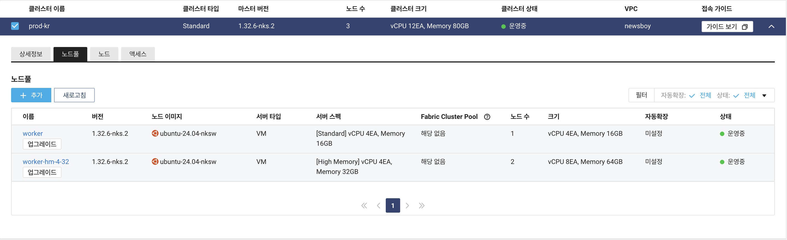
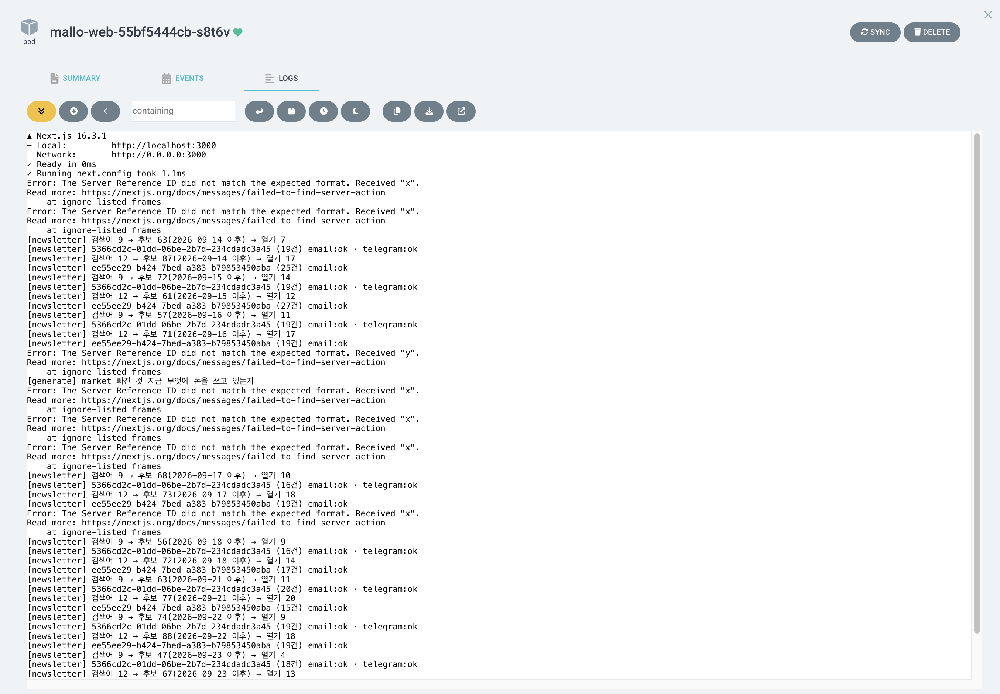
뉴스를 제공하는 언론사 서비스에서 기존 언론사와 차별점이 필요했습니다. 사건을 검색하면 위키 형식이나 파편화된 기사로만 정보를 얻어야 했기에, 한 페이지로 사건을 이해할 수 있는 서비스를 기획하고 개발했습니다.
흩어진 뉴스를 사건 단위로 묶어 전말과 인물 발언, 시간순 전개, 커뮤니티 반응을 자동 생성하는 파이프라인을 단독으로 설계하고 구현했습니다.
운영 DB에서 읽기 전용으로 원천 데이터를 가져와 정제한 뒤, 분리된 결과 DB의 22개 테이블에 적재합니다. 기획과 와이어프레임부터 DB 설계, 서버 환경 구성, 백엔드와 화면 개발까지 디자인을 뺀 전 과정을 맡았습니다.
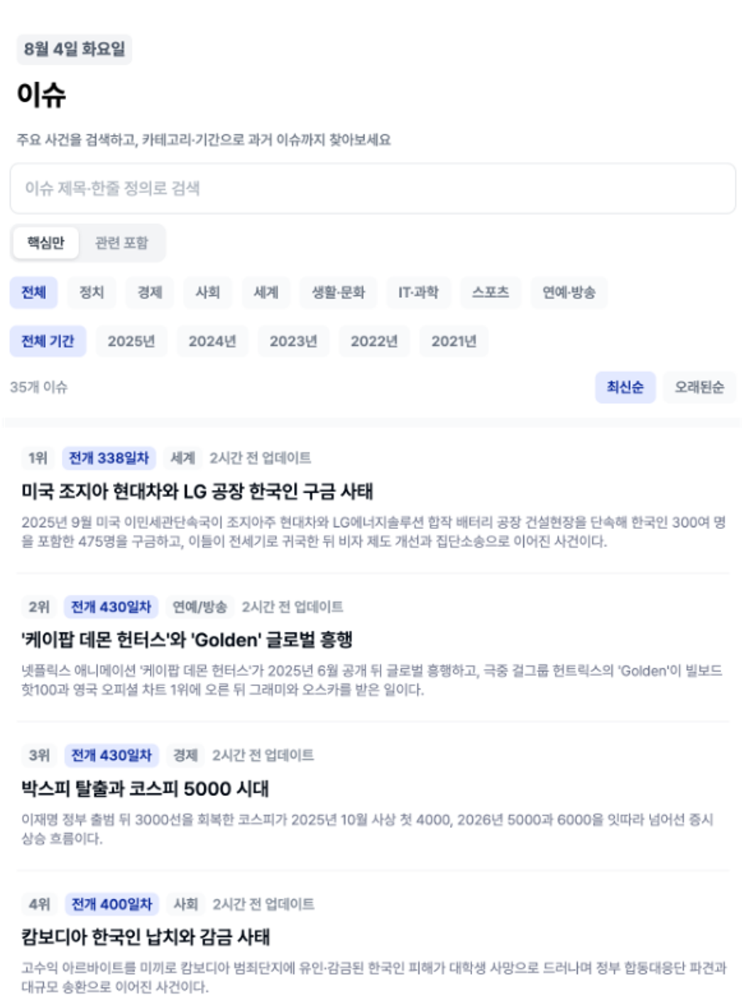
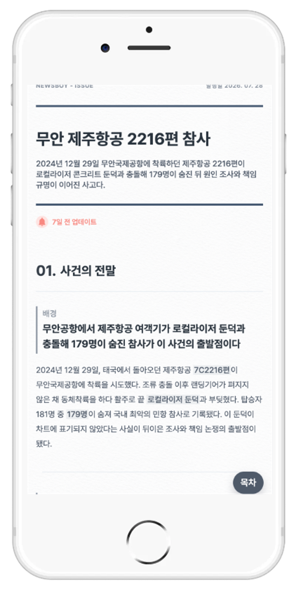
작업량이 전체 규모가 아니라 그날 들어온 데이터 양에만 비례하게 됐습니다. 전수 재검사에서 시기가 맞지 않는 기사 네 건을 잡아냈고, 현재 62개 이슈가 하루 두 번 갱신됩니다.
장애를 기다렸다가 고치는 것보다, 처음부터 실수해도 서비스 DB는 살리는 경계를 만드는 일이 중요했습니다. 모델 출력을 믿지 않고 코드가 검증하는 지점을 정해 두면 무인 운영에서도 결과를 신뢰할 수 있었습니다.
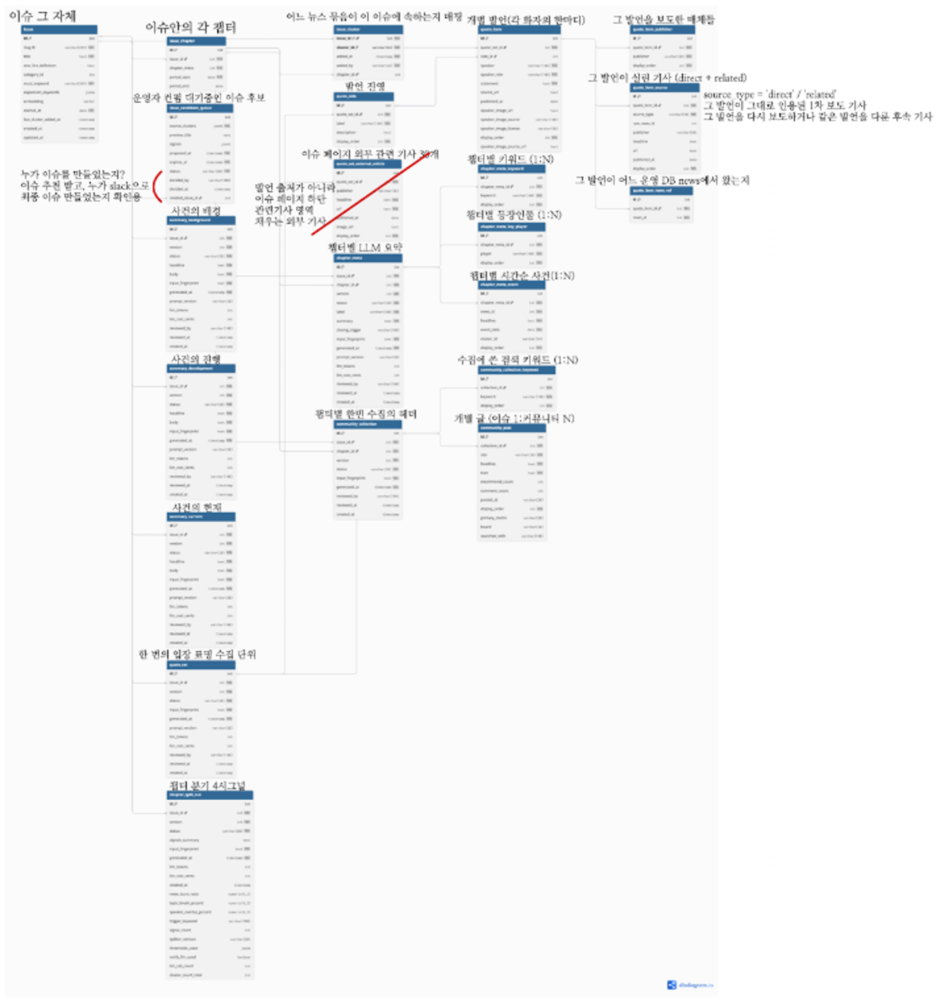
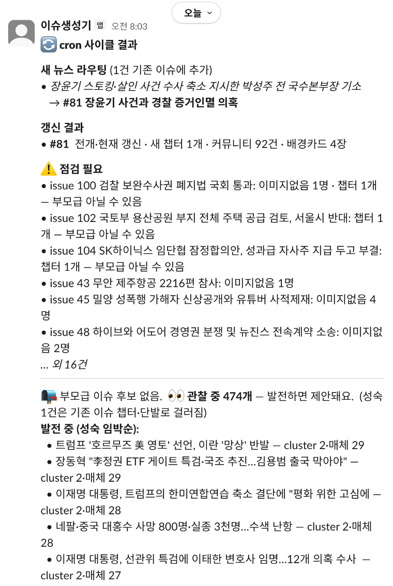
커뮤니티 채널에 콘텐츠를 올리던 반복 작업을 배치 파이프라인으로 자동화하고, 로컬 장비 과부하와 IP 차단 문제를 겪으면서 실행 환경을 네이버 클라우드로 옮긴 경험입니다.
뉴스보이 기사를 커뮤니티에 올려 서비스 유입을 만드는 일을 기획하고 자동화했습니다. 수집과 분석, 리라이트, 게시로 작동하는 배치 파이프라인으로 운영했으며 아침과 점심, 저녁에 실행되도록 했습니다. Slack Webhook과 연동해 실행 결과와 장애를 상시 확인합니다.
이 파이프라인은 이후 쿠버네티스로 이관했습니다. 자세한 내용은 프로젝트 1에 있습니다.
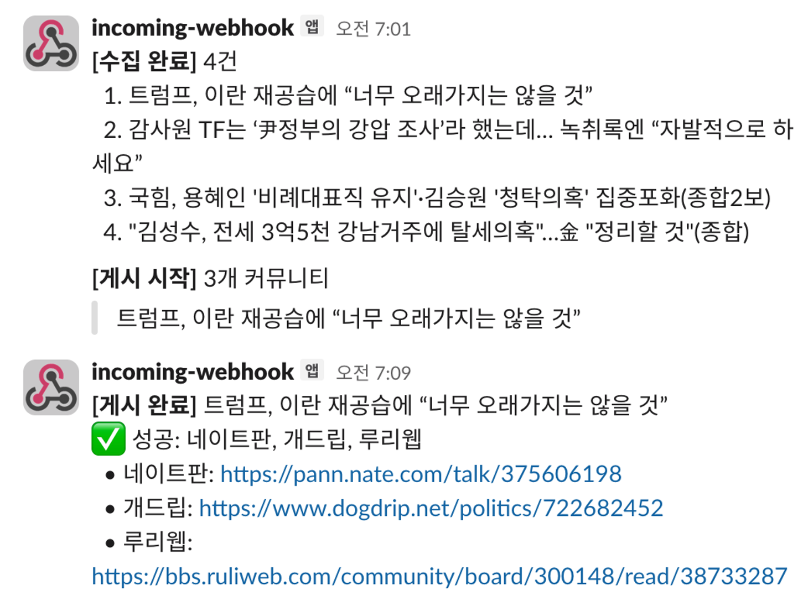
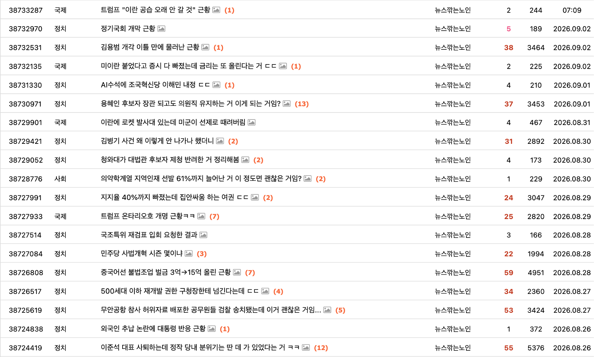
세 번째 시도에서 두 문제가 동시에 풀렸고, 파이프라인을 다시 가동했습니다.
오류 원인이 코드가 아니라 자원과 네트워크일 수 있다는 점입니다. 그리고 알림이 없으면 장애를 늦게 압니다. Slack으로 실행 결과를 밀어 보내, 찾아가지 않아도 실패가 보이게 만들었습니다.
말로 설명하면 사업계획서가 만들어지는 서비스. 음성 전사부터 문서 생성과 내려받기, 뉴스레터 정기 발송 배치와 결제까지 전 구간을 개발했습니다.
창업자가 말한 내용으로 사업계획서를 만들어 주는 서비스입니다. 사업계획서 생성과 맞춤 뉴스레터, 홍보 콘텐츠 자동 제작 세 상품을 운영합니다.
음성 전사부터 문서 생성과 내려받기, 구독 결제와 환불 웹훅까지 서비스 전 구간을 맡았습니다. 뉴스레터는 쿠버네티스 CronJob이 정해진 시각에 호출하고, 사내 뉴스 검색 서비스를 MCP로 연동해 근거를 확보합니다.
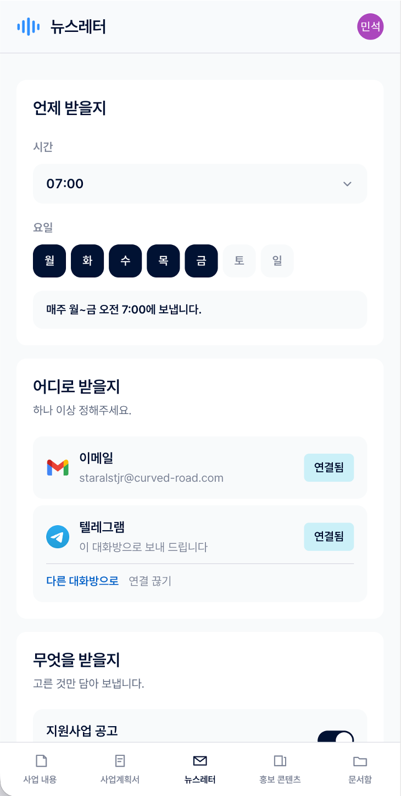
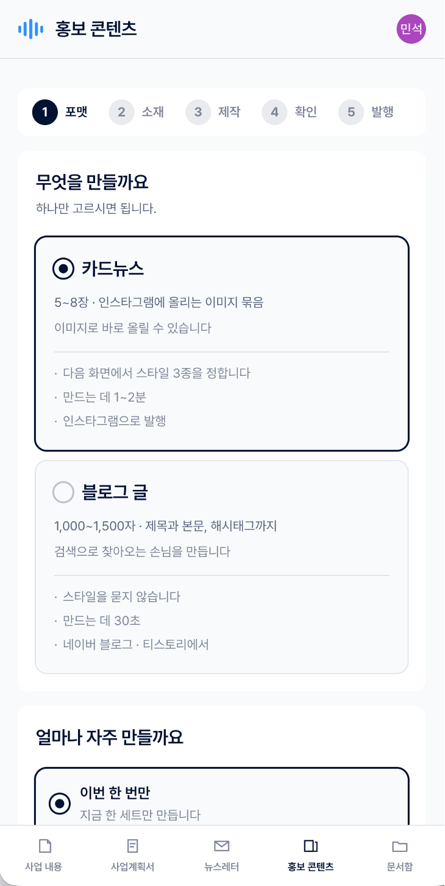
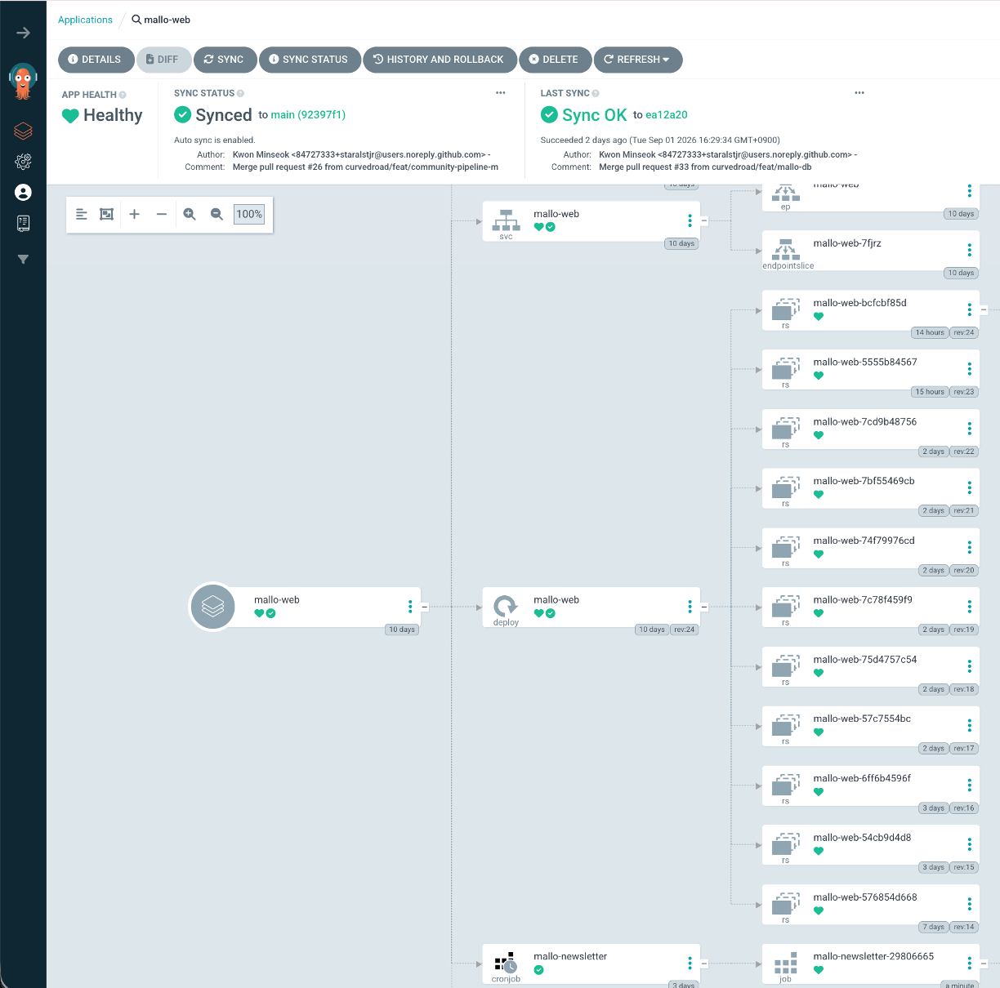
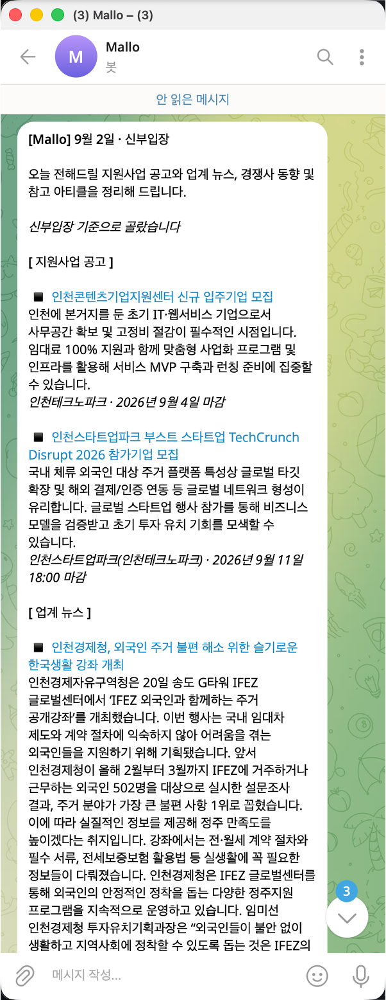
연동이 끊겨도 검색으로 대체해 뉴스레터가 멈추지 않게 했고, 출처는 모델이 아니라 코드가 붙이도록 했습니다.
중복 방지와 배치 크기 조절, 부분 실패 격리는 워크플로 도구가 다루는 문제와 같은 성격이었습니다. 완벽한 출처보다 발송이 멈추지 않는 쪽을 택하는 것도 설계 판단이라는 것을 배웠습니다.
AWS SAA로 배운 VPC와 서브넷, ALB, Auto Scaling, RDS 개념을 Terraform으로 직접 구성한 학습 프로젝트입니다. 이틀간 진행했습니다.
10.0.0.0/16 VPC를 Public과 App, DB 3계층으로 나누고 서울 리전 두 가용 영역에 서브넷을 배치했습니다. App과 DB는 private 서브넷에 두어 외부 직접 접근을 막고, App의 아웃바운드만 NAT Gateway로 열었습니다.
자격증으로만 익힌 구성을 검증 가능한 인프라로 옮겨 본 것이 목적이었습니다. 수동으로 서버를 올리면 같은 환경을 반복해서 만들고 지우기 어려워, 전부 코드로 정의했습니다.
실제 트래픽 부하 테스트와 과금, 스케일 정책까지는 가지 못했습니다. 다음에는 CPU 기반 스케일 정책과 GitHub Actions의 terraform plan부터 붙이려 합니다.
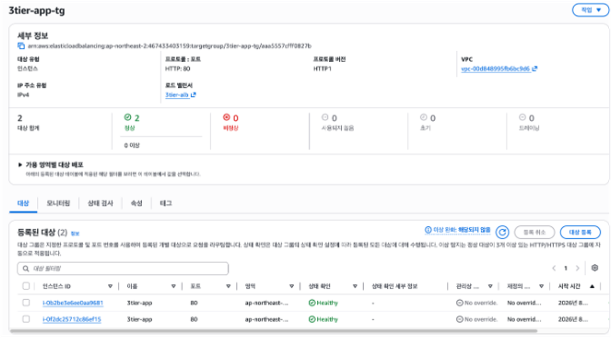
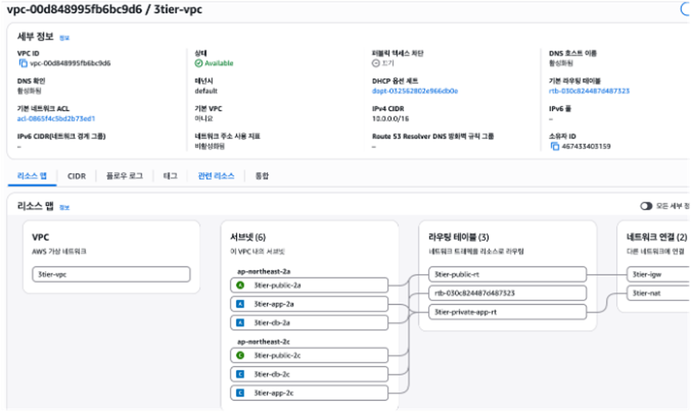
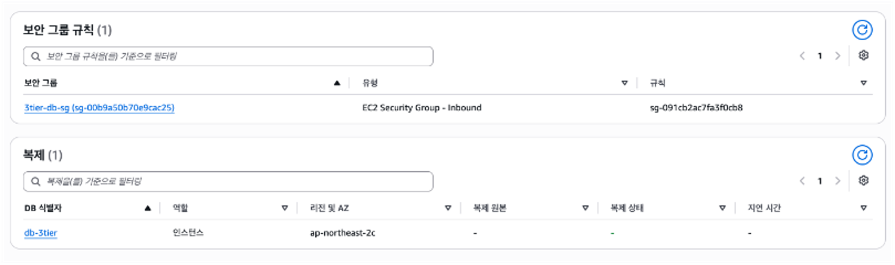
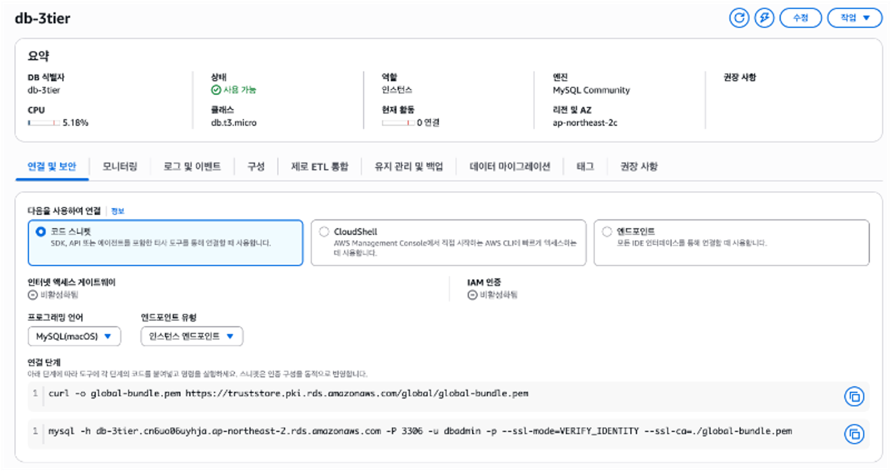